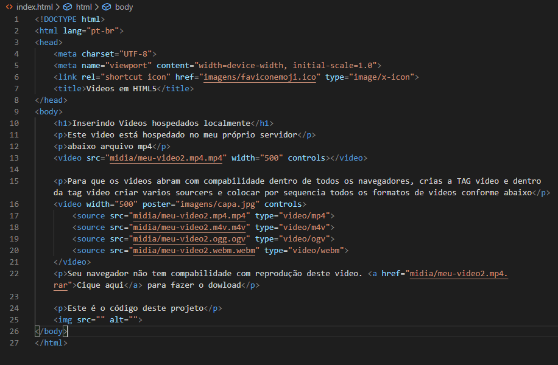

Este video está hospedado no meu próprio servidor
abaixo arquivo mp4
Para que os videos abram com compabilidade dentro de todos os navegadores, crias a TAG video e dentro da tag video criar varios sourcers e colocar por sequencia todos os formatos de videos conforme abaixo
Seu navegador não tem compabilidade com reprodução deste video. Cique aqui para fazer o dowload
Este é o código deste projeto
Inserindo videos do YOUTUBE